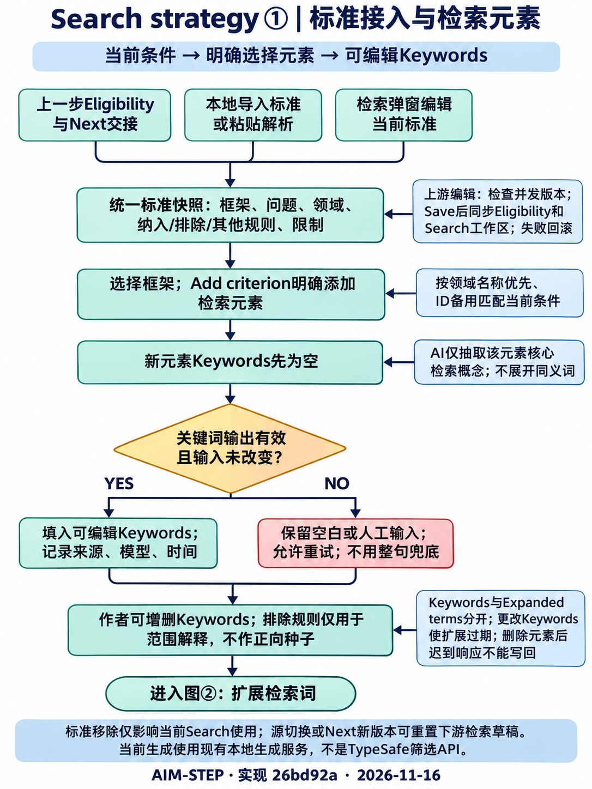
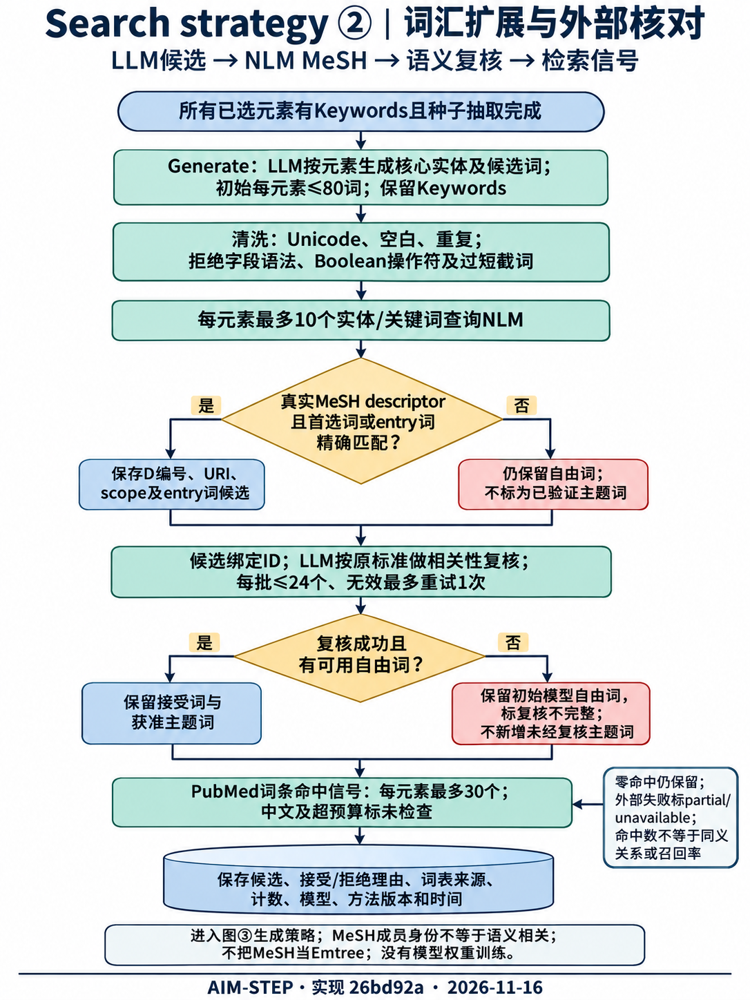
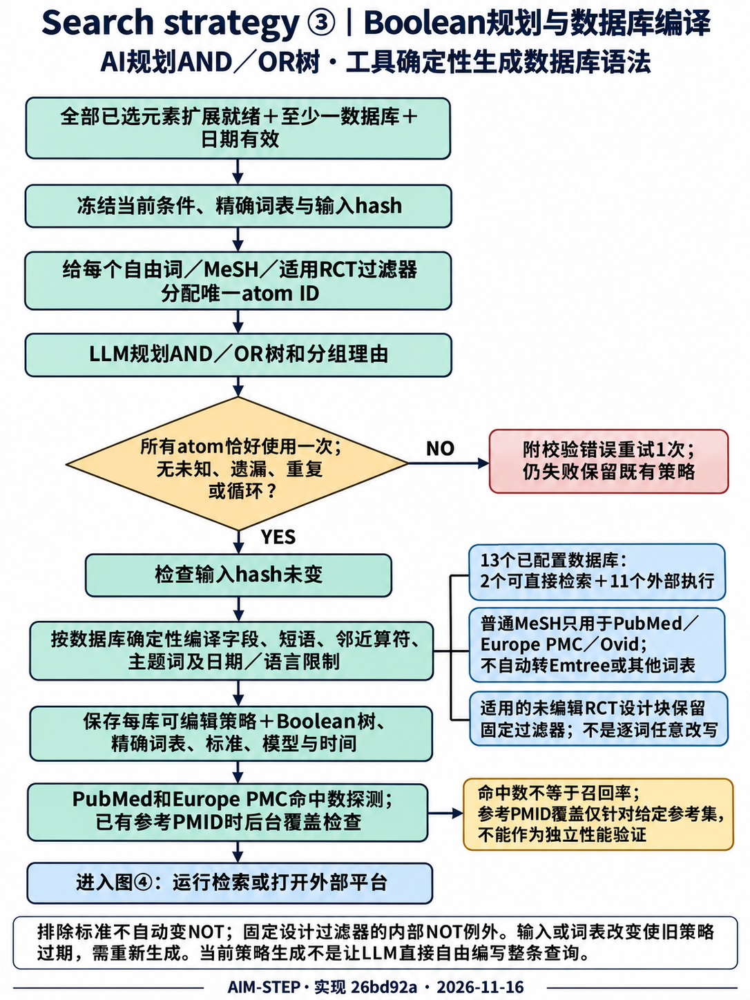
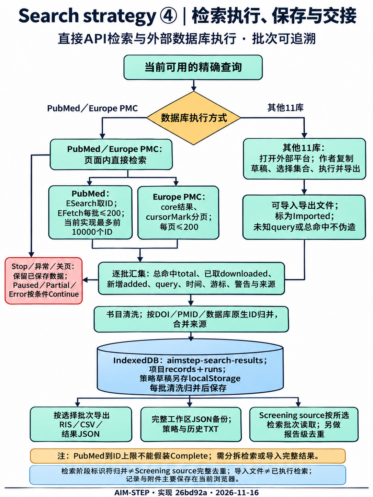

Search strategy 技术流程图
四张图按 1–4 阅读：标准接入、检索词扩展、Boolean规划、数据库检索及保存。点击图片或“打开原图／放大”查看完整 PNG；手机可双指放大。每图下方可展开文字技术细节及代码依据，无需安装 Mermaid。
Screening source 图册 · Pilot 与 Main screening 图册 · GitHub 技术路线图档案
下载本模块四张图片、文字细节与可编辑源码（ZIP）1. 标准接入与检索元素
导入当前条件、显式选择检索元素、AI 核心词种子与手工关键词保护。


技术细节与代码依据（文字版）
| 标准接入 | 使用当前 Eligibility 工作区、Next 的 session 交接或 Search 本地上传/粘贴标准。canonicalSnapshot 统一领域行、框架、问题、综述类型和日期语言限制；本地导入标准不等同于导入检索结果。 普通同步只跟踪 previous 来源；本版本初始化会调用 syncPreviousCriteria(true) 优先接入非空上游，Next 交接变更也可重置草稿，因此“本页移除”不等于跨重载永久断开上游。 |
|---|---|
| 编辑与上游同步 | 检索弹窗复用 Eligibility 的隔离预览。Save 前核对上游原始值和检索快照；保存后成组同步 Eligibility 工作区、Search 草稿和标准摘要，失败回滚。上传文件另存项目文件库；.doc 可以留文件但需另给可解析副本。 |
| 选择检索元素 | Add criterion 按所选框架显式添加元素，先按领域名称、再按 ID 匹配当前标准。最多 60 个元素；不会因标准里有某领域就无条件把它加入检索。移除当前使用标准不等于删除 Eligibility 原内容。 |
| AI 种子 | 新元素 Keywords 先为空，随后调用现有生成模型提取最多 12 个简短核心种子。输入包含该领域纳排/其他规则及整体标准；不扩展同义词，不把被排除实体当正向种子，不以整句标准作为失败兜底。 |
| 保护与过期 | Keywords 可手工改。元素、输入版本、关键词或标准在请求期间改变，迟到结果不应用；失败可重试或手动输入。Keywords 改变会使扩展 stale，既有策略会标 wordsChanged，不能继续当作当前生成结果。 |
| 存储与范围 | 标准快照、概念、词表、策略草稿按 scope 保存到 aimstep-search-strategy 的 localStorage；上传文件使用单独 IndexedDB。直接检索记录存另一个库。当前起草路径使用生成服务，与 TypeSafe 筛选模型分开。 |
对应函数：canonicalSnapshot / syncPreviousCriteria / saveSearchCriteria / extractElementKeywords / wordsEdited / machineWordKey。查看该版本页面代码 · 标准库代码 · 跨工作区保存代码。
2. 词汇扩展与外部核对
LLM 同义候选、NLM MeSH 真正词条匹配、受限语义复核与命中信号。


技术细节与代码依据（文字版）
| 候选生成 | 全部所选元素有 Keywords 且种子抽取完成后启动。collectMachineWords 按元素 ID 输出候选及核心实体，每元素最多 80 个初始词；原始 Keywords 与 Expanded terms 分开，重新生成替换扩展输出但保留输入词。 |
|---|---|
| 规范化 | cleanGeneratedWords 做 NFKC、大小写/空白去重，拒绝数据库字段语法、Boolean 操作符、URL 和非法截词。含星号的词要求至少 4 个字母的词根。清洗列表上限 120；这是资源限制，不是词汇覆盖保证。 |
| NLM MeSH | 每元素最多 10 个实体/关键词查 ESearch/ESummary。仅接受 descriptor、有真实 D 编号、首选或 entry 词规范化精确匹配者；保存 URI、scope 和 entry 词。不把自动 query translation 或 supplementary concept 当作 descriptor。 |
| 模型语义复核 | 候选绑定固定 ID，模型只作 accept/reject 和简短理由，不得新增候选。按最多 24 条一批复核，无效结果最多重试一次。真实 MeSH 成员身份仍需结合原条件和 scope 判断相关性。 |
| 失败策略 | 没有合适 MeSH 时保留自由词。复核失败或没有接受的自由词时保留初始模型自由词，标 draft-review-unavailable，且不新增未经复核主题词。外部服务部分失败记录 partial；这些状态不等于经人工验证或性能已验证。 |
| 命中探测与审计 | 对每元素至多 30 个位置的非中文词作 PubMed [tiab] 计数；中文和超预算标 not-checked，零命中仍保留，失败不伪装为该词零命中。wordAudit 保存候选、词表、接受拒绝理由、计数、版本、时间和模型；细节主要留在后台。 |
对应函数：startMachineWords / collectMachineWords / cleanGeneratedWords / meshLookup / meshDescriptors / reviewWordCandidates / verifyConcepts。查看该版本页面代码 · 标准库代码 · 跨工作区保存代码。
3. Boolean 规划与数据库编译
以精确词表 ID 生成可验证 AND/OR 树，再编译各库字段和限制。


技术细节与代码依据（文字版）
| 准备与冻结 | searchWordsReady/validateConcepts 要求全部当前元素扩展非空、非 pending/stale；至少选一数据库，日期有效。machineStrategies 克隆当前元素并记录 draftHash，返回前再次核对输入未变。 |
|---|---|
| AI 任务 | 模型接收精确 atom ID、原标准、元素 Keywords 和纳排上下文，输出 AND/OR 分组树及理由；当前实际执行 machineStrategies，不是遗留 modelCall 的整条查询自由生成路径。排除规则用于理解范围，不自动形成 NOT。 |
| 验证与重试 | 所有词 atom 必须恰好使用一次，节点不能未知、重复、遗漏、循环或超过 40 层，节点数受词表规模约束。无效时携错误重试一次，仍失败保留既有策略；输入并发改变也拒绝应用。此验证证明树结构，不证明语义最优。 |
| 数据库编译 | 当前配置 13 库：PubMed、Europe PMC 可直接检索；Embase、Scopus、Web of Science、Cochrane、CINAHL、PsycINFO、CNKI、Wanfang、VIP、SinoMed、Ovid 为外部执行草稿。字段、短语、支持的邻近语法及日期/语言限制由代码确定。中文库为高级表单概念组草稿。 |
| 词表和设计过滤器 | 普通 MeSH 仅用于 PubMed、Europe PMC、Ovid，其余库忽略该类叶子且保留可用自由词，不能把 MeSH 直接当 Emtree。符合当前识别条件且未手改的 RCT 设计可使用代码内置固定设计块；它作为不可拆 atom，允许块内部既有 NOT。 |
| 探测与审计 | 策略保留 Boolean 树、词表、原标准、模型、日期，作者仍可编辑查询。仅对 PubMed/Europe PMC 探测命中数；已有参考 PMID 时作给定集合覆盖，未知 ID 单列。结果不是全部数据库已执行，不是独立召回率或精确率验证。 |
对应函数：searchWordsReady / draftHash / booleanInventory / validateBooleanPlan / machineStrategies / compileBooleanPlan / compileQuery / countQueries / checkRecall。查看该版本页面代码 · 标准库代码 · 跨工作区保存代码。
4. 检索执行、保存与交接
两个直接 API、外部平台、批次进度、标识符归并、导出与 Screening source。


技术细节与代码依据（文字版）
| 直接与外部执行 | 只有 PubMed 和 Europe PMC 调公开 API 取得记录；其他数据库打开平台，由作者运行/导出并导入。生成草稿不表示已搜索全部 13 库，外部平台的账号和集合需在平台选择。 |
|---|---|
| PubMed 实现 | ESearch 使用 retmax=10000 保存返回 ID、总命中、翻译、警告；EFetch 按至多 200 条取 XML。代码无法以此路径超过首批 10,000 ID；触顶但未达到报告总命中则保留 Partial，建议分拆不重叠检索或导入完整导出。 |
| Europe PMC 实现 | 用 core 结果、cursorMark 和最多 200 条分页，按 source|id 去除同批重复。游标耗尽但少于总命中仍标 Partial；数据库数量途中变化会记录提示。每页保存进度，命中范围不等同于 PubMed。 |
| 批次、停止与续跑 | 每批保留 query、标准/词表/限制快照、total、downloaded、added、时间、ID/游标和来源。Complete 只在已取达到报告总命中；用户数量限制、接口耗尽、Stop、异常和关页按 Partial/Paused/Error 留存并按条件 Continue，重载不会把中断伪装成完成。 |
| 初步归并与导入 | 书目清洗后按 DOI、PMID 及带数据库来源的 native ID 归并并合并 provenance；它不是 Screening source 的报告级完整去重。导入 RIS/NBIB/CSV/TSV/JSON 最多 80 MB，Imported 的执行 query 和总命中若未知则保持未知。 |
| 存储与交接 | 策略草稿 localStorage，records/runs 写入 aimstep-search-results/projects。结果按选择批次覆盖集合导出 RIS/CSV/JSON；完整工作区 JSON 备份含全部 records/runs/state，模型令牌不恢复。策略/历史 TXT 另可下载。Screening source 从选定批次读取，再做自己的报告级去重；浏览器存储不等于云同步。 |
对应函数：runSearch / retrievePubmed / retrieveEpmc / executeRun / continueRun / addRecord / persistResults / importResults / downloadBackup。查看该版本页面代码 · 标准库代码 · 跨工作区保存代码。
只有 PubMed 与 Europe PMC 支持本页直接检索；其他数据库为策略草稿及外部执行。MeSH 词条成员身份、词条命中数和给定参考集覆盖均不等于独立检索性能证明。图像说明当前实现；文字细节、Mermaid 源码及固定代码版本用于核对精确条件。当前浏览器存储不代表跨设备自动同步；生成、核对和合成样本检查不构成真实综述性能验证。